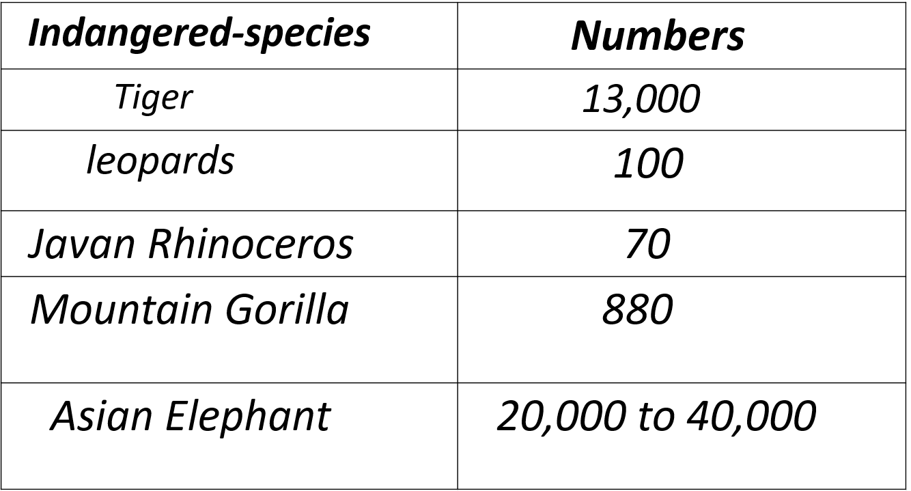

An endangered species is a species that is very likely to become extinct in the near future' either worldwide or in a particular political jurisdiction. Endangered species may be at risk due to factors such as habitat loss, poaching and invasive species. The International Union for Conservation of Nature (IUCN) Red List lists the global conservation status of many species, and various other agencies assess the status of species within particular areas. Many nations have laws that protect conservation-reliant species which, for example, forbid hunting, restrict land development, or create protected areas. Some endangered species are the target of extensive conservation efforts such as captive breeding and habitat restoration.
